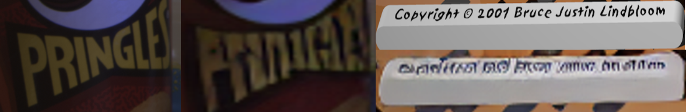
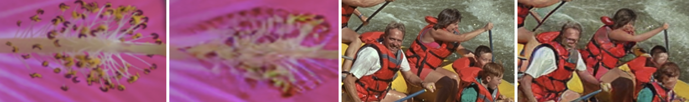
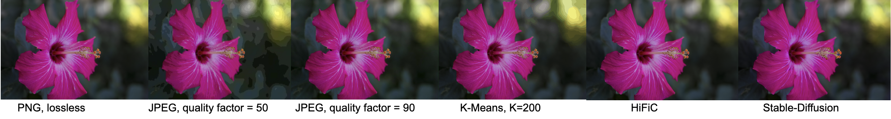

Image Compression Comparative Study
Ritu Raut
Ajay Joshi
About
With the current abundance of image data on the internet and everywhere, compute efficient, highly compressive image compression algorithms are crucial. Applying such image compression algorithms to digital images would help to reduce storage cost and network bandwidth required to transmit them. We conducted a comprehensive study on the state-of-the-art classical, learning-based methods. We evaluated these methods based on diversified evaluation measures like compression ratio, the bit rate, and the peak signal-to-noise ratio, summarize their merits, and tried hybrid approaches for specific design choices.
Motivation
Current state-of-the-art classical algorithms take advantage of visual perception and the statistical properties of image data. Learning-based strategies, on the other hand, aim to directly learn an end-to-end mapping between the input and the output of the compression process. While the potential of learning-based image compression has been shown in recent years, the computational efficiency and memory requirements of these methods have been a limiting factor in their practicality. Learning-based strategies, on the other hand, aim to directly learn an end-to-end mapping between the input and the output of the compression process. While the potential of learning-based image compression has been shown in recent years, the computational efficiency and memory requirements of these methods have been a limiting factor in their practicality. Recently, Latent diffusion models [6] and GAN-based models have emerged as a promising approach for learning-based image compression. Currently, JPEG and PNG are the two most widely used classic compression methods for images. On the other hand, even while learning-based algorithms exhibit good compression results, it is unclear which image domains they can replace traditional ones in. Hence, we created a benchmark of various image compression methods and presented different use cases of images where certain algorithms outperformed others.
Demo
Interactive Demo comparing different image compression methods

Implementation
In this compression benchmark, we implemented 5 broad approaches for compression: PNG, JPEG, K-means clustering, HiFiC (Conditional-GAN based compression), and Stable Diffusion (generative approach based on iterative denoising).
PNG
PNG is a lossless compression algorithm, which is broadly composed of delta encoding combined with LZ77 compression which consists of Huffman coding. We implemented PNG by performing a basic delta encoding per channel followed by ZLib compression on the concatenation of the output.
JPEG
JPEG is a lossy compression algorithm, and is one of the most widely deployed compression codecs. JPEG is a pipeline composed broadly of the 4 steps:- Color transform : Transforming the color space from RGB to YCbCr (Luma-chroma: Y- Luma, Cb, Cr - chroma). One small implementation detail in this component is the numerical overflow caused by the conversion from RGB to YCbCr and back, which can be avoided by clipping the output to the range [0, 255].
- Discrete Cosine Transform(DCT) : This component transforms a block of pixels from the YCbCr value space to the frequency space through a Fourier transform(Cosine) of the block. DCT is generally applied on a block of 8 x 8 pixels (although this window is configurable).
- Quantization : This is the only step in the pipeline which is a lossy one, which reduces coefficients of higher-frequency terms in the DCT to 0, with the assumption that humans are not sensitive to higher frequency content in images. The higher the quantization values, the higher number of coefficients are reduced to 0. The quantization is adaptive and can be controlled by a quality factor.
- Huffman coding : The DCT coefficients after quantization are compressed using RLE + Huffman coding (we use ZLib for compression). Higher amount of zeros present in the image lead to higher compression.
HiFiC
HiFiC (High Fidelity Generative Image Compression) is a compression method based on Conditional-GANs where the compression codec strikes a trade-off between rate, distortion and perception, and takes a generative approach to compression, where input is conditioned on the upsampled image to get the latent representation, and then the model generates the image from the latent representation. The latent representation is the compressed image, and this method achieves very high compression ratios (~150-200)/ low bitrates, with reconstructed images being perceptually similar. This method is a part of the tensorflow compression library, and we use the trained model weights for the codec.
Stable diffusion
Stable diffusion is a recently published method for generating images from text/images. The architecture of Stable Diffusion consists of U-Net + Scheduler, which iteratively removes noise from the latent space representation of the image, which is then decoded by an autoencoder decoder. The latents are a compressed representation of the image. Stable Diffusion also produces highly compressed representations, although taking lot more time than classical algorithms like JPEG/PNG, etc.
Additional features
We provide some features on top of the above mentioned codecs, like multi-core parallelization for all codecs and adaptive compression in JPEG to speed up runtimes, and we study variation in quality and compression performance. In addition to this, we also combine techniques for compression together and observe worse compression performance due to such stacking of techniques: for eg: for a lossless compression, applying RLE in PNG encoder after a delta encoding worsens the compression performance, and delta encoding after DCT + Quantization in JPEG worsens performance. With these experiments, we show that only certain combinations of transforms give good compression, and arbitrarily stacking up transforms might worsen compression performance considerably.Setup
We evaluate on the Image Compression Benchmark dataset, consisting of 15 images with a total size of 450 MB. We use the metrics of PSNR (Peak Signal to Noise Ratio) and SSIM (Structural Similarity) between original and reconstructed images for measuring the quality of the reconstructions. We also use compression ratios, bit rates (bits per pixel) for compression performance, and consider codec runtime (for encode + decode) as a performance axis.
Results and Analysis
The following shows scores for the studied algorithms, across each metric, where higher is better for PSNR, SSIM, Compression ration and vice versa for runtime.
We utilised the Image Compression Benchmark dataset for our evaluation. It consists of 15 images of high quality and size equal to 450MB.


The study shows that the state of the art learning based models are giving substantially higher compression ration than the classical algorithms. However, the classical algorithms are giving better PSNR and SSIM scores and are also faster than the learning based models. Under subjective evaluation, of the learning based models, the image quality seems to be better than the classical algorithms. This also shows PSNR and SSIM are not good indicator metrics of quality for generative methods, as they have lower scores even though the images are better.
Stable Diffusion results
Text hallucination 
The following image shows the results of stable diffusion on images with texts in small as well as large font sizes. Similar, text hallucination can be observed from the deck of the images in the demo for stable diffusion
Quality loss for smaller objects in images 
There is significant loss in quality when it comes to small objects in images like face features, flower stigma, etc. The image above gives comparison between original (left) and compressed (right) images.
Quality comparison
JPEG at lower quality produces ringing artifacts, as seen in the background of the flower image. PNG, K-Means (without downsampling), and JPEG (with quality 100) are lossless and are equivalent to the original image. HiFiC and Stable diffusion produce high quality reconstructions for natural images. But, they are not able to encode and reconstruct faces, while Stable Diffusion can’t encode + reconstruct text in images even in a large enough font.
Discussion
The following table shows different points in the space of algorithms corresponding to the metrics we defined above and algorithms that fit into these profiles.
| Profiles | Algorithms |
|---|---|
|
|
|
|
|
|